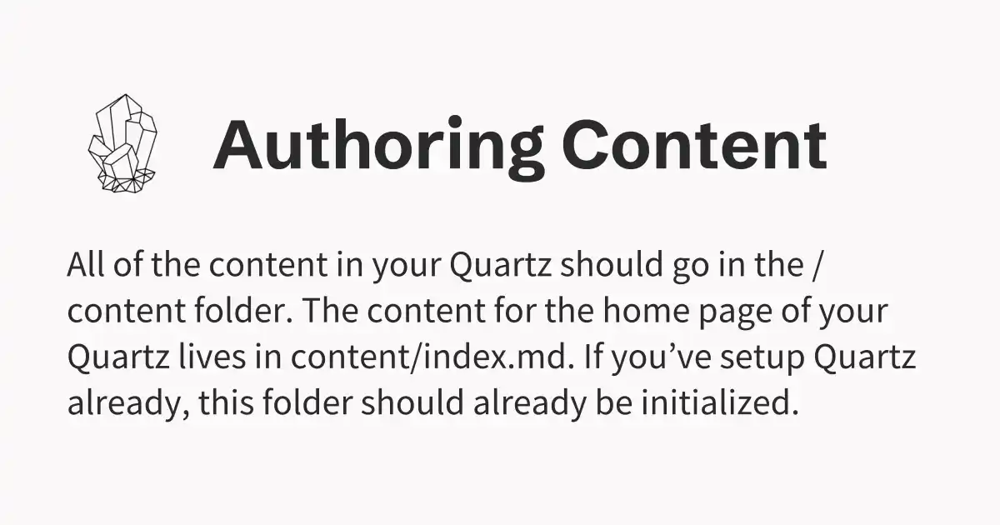
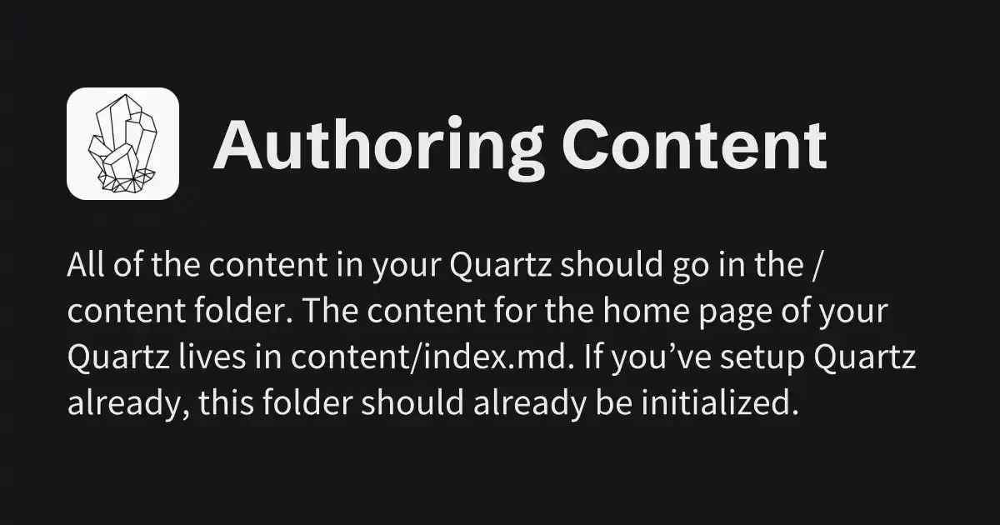
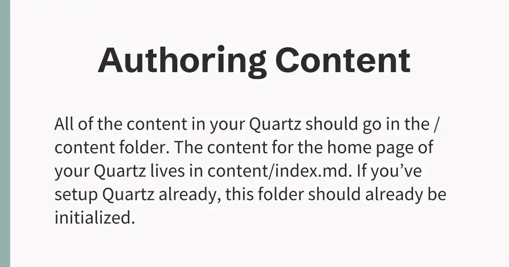
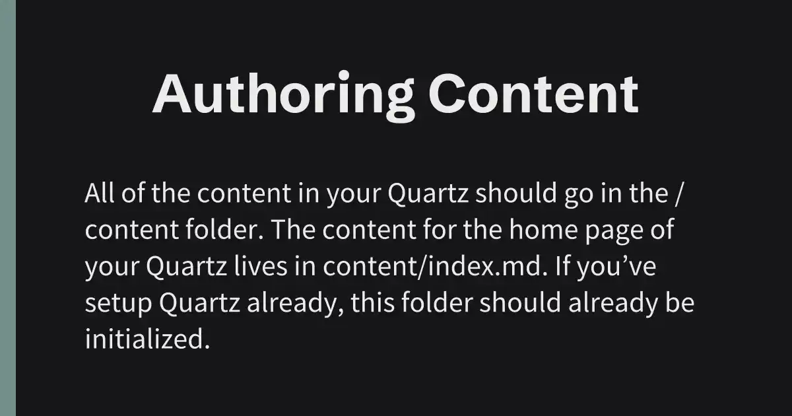

A lot of social media platforms can display a rich preview for your website when sharing a link (most notably, a cover image, a title and a description). Quartz automatically handles most of this for you with reasonable defaults, but for more control, you can customize these by setting Frontmatter Properties.
Quartz can also dynamically generate and use new cover images for every page to be used in link previews on social media for you. To get started with this, set generateSocialImages: true in quartz.config.ts.
Showcase
After enabling generateSocialImages in quartz.config.ts, the social media link preview for Authoring Content looks like this:
Light
Dark


For testing, it is recommended to use opengraph.xyz to see what the link to your page will look like on various platforms (more info under local testing).
Customization
You can customize how images will be generated in the quartz config.
For example, here’s what the default configuration looks like if you set generateSocialImages: true:
quartz.config.ts
generateSocialImages: { colorScheme: "lightMode", // what colors to use for generating image, same as theme colors from config, valid values are "darkMode" and "lightMode" width: 1200, // width to generate with (in pixels) height: 630, // height to generate with (in pixels) excludeRoot: false, // wether to exclude "/" index path to be excluded from auto generated images (false = use auto, true = use default og image)}
Frontmatter Properties
Hint
Overriding social media preview properties via frontmatter still works even if generateSocialImages is disabled.
The following properties can be used to customize your link previews:
Property
Alias
Summary
socialDescription
description
Description to be used for preview.
socialImage
image, cover
Link to preview image.
The socialImage property should contain a link to an image relative to quartz/static. If you have a folder for all your images in quartz/static/my-images, an example for socialImage could be "my-images/cover.png".
Info
The priority for what image will be used for the cover image looks like the following: frontmatter property > generated image (if enabled) > default image.
The default image (quartz/static/og-image.png) will only be used as a fallback if nothing else is set. If generateSocialImages is enabled, it will be treated as the new default per page, but can be overwritten by setting the socialImage frontmatter property for that page.
Fully customized image generation
You can fully customize how the images being generated look by passing your own component to generateSocialImages.imageStructure. This component takes html/css + some page metadata/config options and converts it to an image using satori. Vercel provides an online playground that can be used to preview how your html/css looks like as a picture. This is ideal for prototyping your custom design.
It is recommended to write your own image components in quartz/util/og.tsx or any other .tsx file, as passing them to the config won’t work otherwise. An example of the default image component can be found in og.tsx in defaultImage().
Hint
Satori only supports a subset of all valid CSS properties. All supported properties can be found in their documentation.
Your custom image component should have the SocialImageOptions["imageStructure"] type, to make development easier for you. Using a component of this type, you will be passed the following variables:
imageStructure: ( cfg: GlobalConfiguration, // global Quartz config (useful for getting theme colors and other info) userOpts: UserOpts, // options passed to `generateSocialImage` title: string, // title of current page description: string, // description of current page fonts: SatoriOptions["fonts"], // header + body font) => JSXInternal.Element
Now, you can let your creativity flow and design your own image component! For reference and some cool tips, you can check how the markup for the default image looks.
Examples
Here are some examples for markup you may need to get started:
Get a theme color
cfg.theme.colors[colorScheme].<colorName>, where <colorName> corresponds to a key in ColorScheme (defined at the top of quartz/util/theme.ts)
Use the page title/description
<p>{title}</p>/<p>{description}</p>
Use a font family
Detailed in the Fonts chapter below
Fonts
You will also be passed an array containing a header and a body font (where the first entry is header and the second is body). The fonts matches the ones selected in theme.typography.header and theme.typography.body from quartz.config.ts and will be passed in the format required by satori. To use them in CSS, use the .name property (e.g. fontFamily: fonts[1].name to use the “body” font family).
An example of a component using the header font could look like this:
This font then can be used with your custom structure
Local testing
To test how the full preview of your page is going to look even before deploying, you can forward the port you’re serving quartz on. In VSCode, this can easily be achieved following this guide (make sure to set Visibility to public if testing on external tools like opengraph.xyz).
If you have generateSocialImages enabled, you can check out all generated images under public/static/social-images.
Technical info
Images will be generated as .webp files, which helps to keep images small (the average image takes ~19kB). They are also compressed further using sharp.
When using images, the appropriate Open Graph and Twitter meta tags will be set to ensure they work and look as expected.
Examples
Besides the template for the default image generation (found under quartz/util/og.tsx), you can also add your own! To do this, you can either edit the source code of that file (not recommended) or create a new one (e.g. customSocialImage.tsx, source shown below).
After adding that file, you can update quartz.config.ts to use your image generation template as follows:
// Import component at start of fileimport { customImage } from "./quartz/util/customSocialImage.tsx"// In main configconst config: QuartzConfig = { ... generateSocialImages: { ... imageStructure: customImage, // tells quartz to use your component when generating images },}
The following example will generate images that look as follows:
Light
Dark


This example (and the default template) use colors and fonts from your theme specified in the quartz config. Fonts get passed in as a prop, where fonts[0] will contain the header font and fonts[1] will contain the body font (more info in the fonts section).